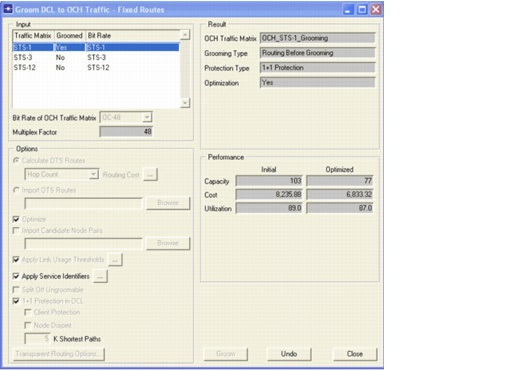

Network Design Operations > Grooming DCL to OCH Traffic > Additional Exercises
Additional Exercises
- Redo the example with different grooming strategies (basic end-to-end grooming, basic link-by-link grooming, and optimized link-by-link grooming) and compare the difference in terms of DCL topology and DCL capacity requirements. Use the Info > Topology > DCL Layer and Info > Topology > OCH Layer dialog boxes to see the link and node capacity in both layers.
- Redo the example with 1+1 protection in the DCL layer. Using the Link Disjoint setting, you can force disjointness of working and protection path only at the DCL layer or down to the OCH, OMS, or OTS layer. For OTS, it is guaranteed that working and protection path will not use the same physical infrastructure—both the grooming of the DCL traffic matrix and OCH dimensioning occur in one step.
- You can disable the grooming function in specific nodes. To do so, select Network > Node Browser (or double click on a node). Select Ports for the View and DCL as the Layer. Right-click on a node and select Change to TM. A terminal multiplexer (TM) replaces the DXC. With the TM in place, the node cannot switch traffic at the DCL level, but can only aggregate or segregate DCL traffic terminated in that node. The node type cannot be changed if traffic has already been routed or groomed.
- You can groom multiple traffic matrices with or without reusing unused DCL capacity. Grooming with reuse of unused DCL capacity is achieved by grooming, dimensioning, and establishing the DCL traffic of the first traffic matrix before performing the same process for the second traffic matrix. This allows you to reuse the unused part of the DCL capacity created during the first grooming action, to host the traffic of the second traffic matrix. Grooming without reuse of unused DCL capacity is achieved by first grooming all DCL traffic matrices and then accommodating the OCH matrices (resulting from the grooming actions) and the groomed DCL matrices in the network.
- The Design > Groom DCL to OCH Traffic > Optimized Routes... feature optimizes routes in the DCL layer to get the lowest-cost design. This might result in some unnatural routes (e.g., with backhauling) in the OCH layer. To prevent this, the Design > Groom DCL to OCH Traffic > Fixed Routes... feature is used. In this case, the (physical) routes of the DCL connections are fixed (calculated on the OTS topology or imported from a file) and the grooming optimization algorithm does not alter these physical routes; it only optimizes whether traffic is best switched optically or electrically in the nodes.

| Home © 1987-2007 OPNET Technologies, Inc. All Rights Reserved. This software may be covered by one or more U.S. Patents. See complete patent notice in the Legal Notices section. OPNET Support Center |